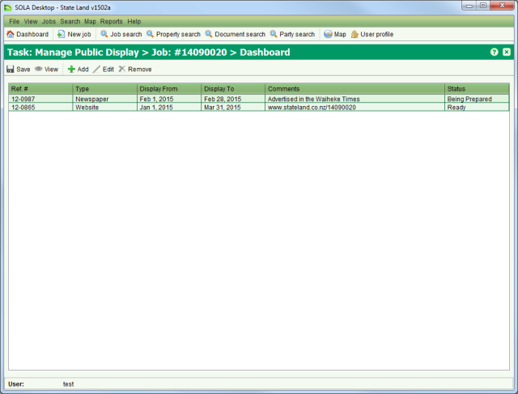
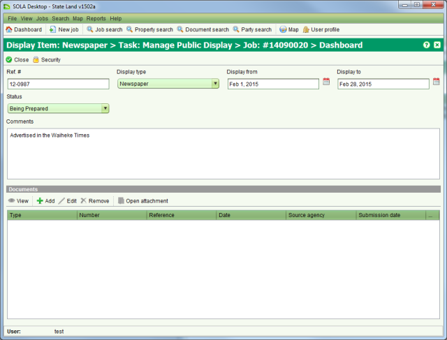

The state is obligated to ensure all parties that may be affected by its actions in relation
to state land are adequately notified of the state’s intentions. This is often addressed
through public notices and advertising. The Public Display List screen identifies all notices
and advertising being used to inform the public about a state land project. To access the
Public Display List screen you must  Start a Manage Public Display task from the Tasks tab of
the Job Details screen.
Start a Manage Public Display task from the Tasks tab of
the Job Details screen.

Public Display List
To add a new public display item to the list click  Add on the Public Display List screen. This will open the Public
Display Details screen allowing you to capture information about a specific public display
item (e.g. Newspaper article, website advertisement, gazette notice, etc.).
Add on the Public Display List screen. This will open the Public
Display Details screen allowing you to capture information about a specific public display
item (e.g. Newspaper article, website advertisement, gazette notice, etc.).

Public Display Details
Enter a reference number, the type of display item, the dates it will be displayed and the relevant status. You can optionally add scanned copies of any documents related to the public display item.
When you have completed editing the public display item information,  Close the Public Display Details screen
and
Close the Public Display Details screen
and  Save your changes from the Public
Display List screen.
Save your changes from the Public
Display List screen.